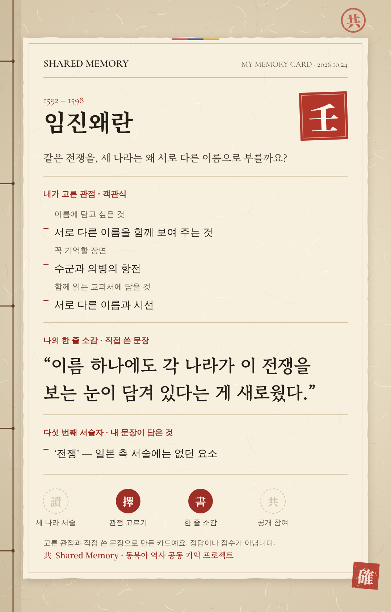
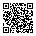

SHARED MEMORY
동아시아 역사 공동 기억 프로젝트
2026 대한민국 고등학생 AI·SW 개발 공모전본선 진출작
AN INTERACTIVE HISTORY INQUIRY
우리는 정말
같은 역사를
기억하고 있을까?
한국·일본·중국의 역사 서술과 AI의 답변을 나란히 비교하고,
나의 관점을 남기는 참여형 역사 탐구 프로젝트입니다.
한국
임진왜란
일본
文禄・慶長の役
중국
万历朝鲜战争
AI
?
1592년 같은 전쟁, 나라마다 다른 이름. 이름 하나에도 역사를 바라보는 시선이 담겨 있습니다.
- 01
역사 서술 비교
같은 사건에 대한 한국·일본·중국의 서술을 나란히 읽어요.
- 02
관점 선택
정답 없는 질문 3개에서 내 생각에 가까운 관점을 골라요. 한 줄 소감은 원할 때만.
- 03
나만의 Memory Card
고른 관점과 소감이 담긴 카드를 이미지로 저장해요.
AI의 답변·단어 분석·사료는 ‘심화 탐구’에서 이어서 볼 수 있어요.


SCAN TO JOIN
휴대폰 카메라로 찍고
바로 시작하세요
3–5분익명
로그인 불필요정답 없음
oseungye.github.io/
shared-memory-Korea
이름·연락처·학교를 묻지 않습니다. 고른 관점과 한 줄 소감은 이름 없이 저장되어 프로젝트 분석에 쓰이며, 다른 참여자에게 공개되지 않습니다. 공개 아카이브에는 직접 동의한 문장만 올라갑니다.